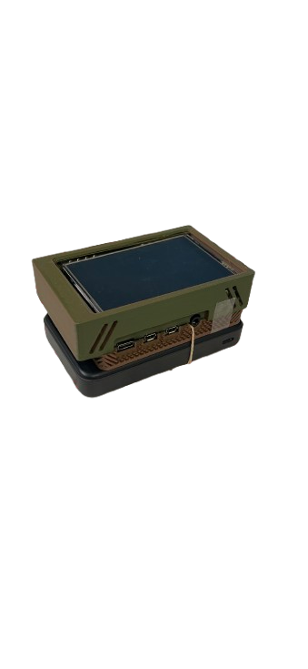
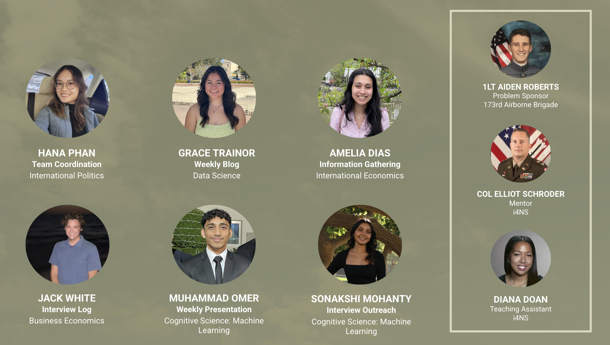
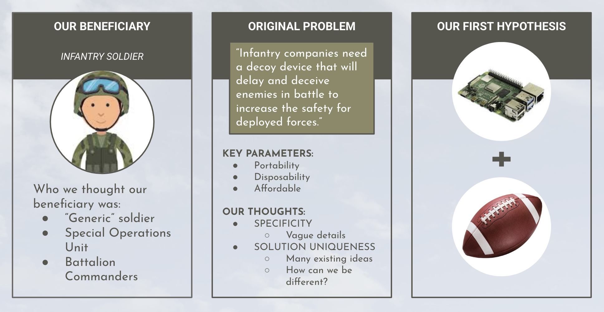
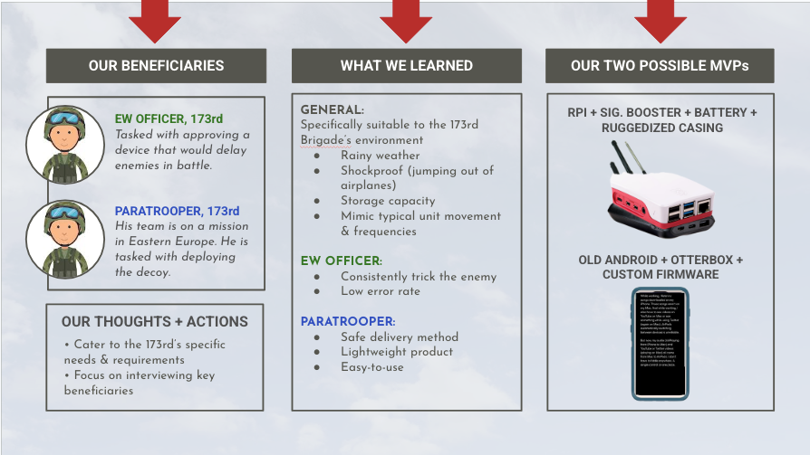
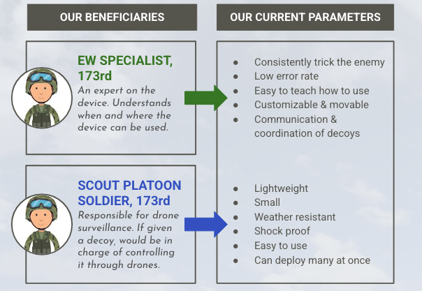
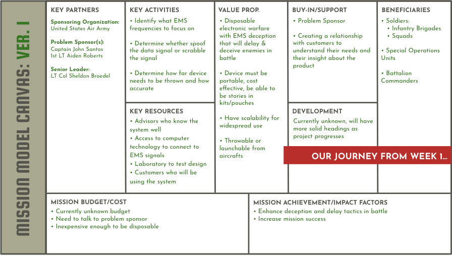
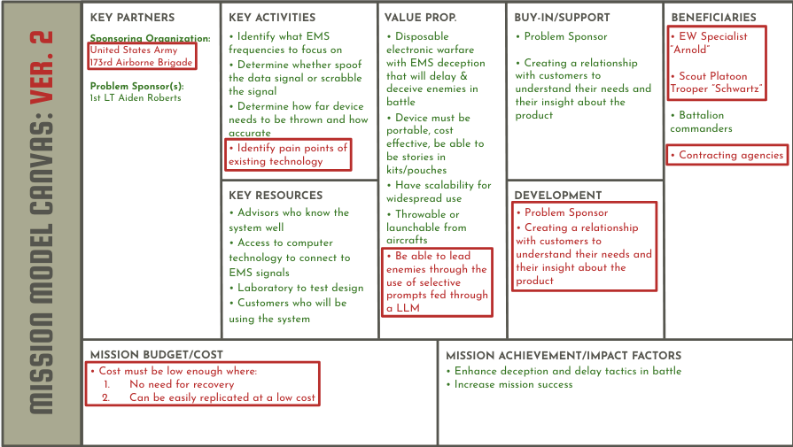
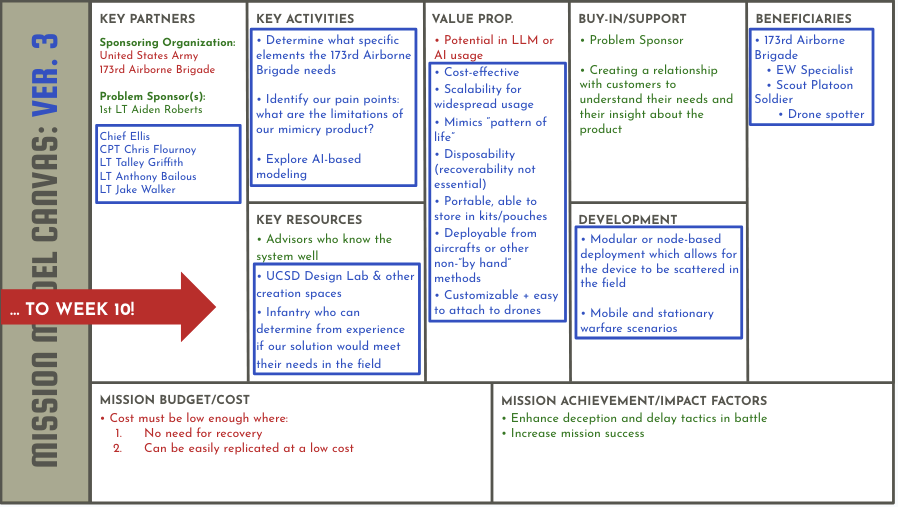

EMS Deception — Department of Defense
UX Research • Customer Discovery • Design Strategy

Goals & Solution
Goals: We collaborated with the US Army and DOD affiliates to develop an EMS decoy device for infantry units.
Solution: MVP is a Raspberry Pi with a signal booster and a portable battery inside a hard shell case.
Problem Statement
The 173rd Airborne Brigade requires a disposable, portable, and scalable device to delay enemies through EMS deception, enhancing mission success and safety. The device must be adaptable to its environment, mimic correct frequencies, and align with unit activity. It should easily attach to drones and be able to coordinate with other decoys.
The Team

Initial Hypothesis
Our team came in not knowing much and we thought only one beneficiary would be involved. We knew our solution needed to be small, cheap, portable, and unique since people in the military were already working on a solution. Our initial idea was to have a programmable Raspberry Pi that we would stick into a foam football since it would be protective, cheap, and easy to throw.

Customer Discovery & User Personas
We conducted 20 interviews over the course of the internship from individuals in the military, public, and private sector. Below are examples of Zoom interviews we took.
Zoom Interviews
1LT Rob, Problem Sponsor
1. "We see there being two different beneficiaries, a EW officer and a paratrooper would be best uses I believe"
2. "Our current solution is putting an old iphone in a ziploc bag, but there has to be better ways of course"
Key Finding: The army currently has underwhelming solutions right now, and we need more than one beneficiary. Gave us more context about his team and how our device would be deployed.
LT Clark, LT in 173rd Airborne Brigade
1. "Don't eat the elephant and focus on a specific group"
2. "TSM bubble maps show where the command centers are and the goal is to disrupt the picture of the map"
Key Finding: Catering our focus to the 173rd Airborne Brigade helps our MVP from being too general.
Jim, Private Defense Contractor
1. "A shock proof and waterproof decoy would be most probable. Start small and have only a few customizable features to prove you can do it"
2. "Make MVP simple and don't overcomplicate it, don't worry about ML policy just yet"
Key Finding: Gave us ideas for parameters for our MVP and assured us to start simple.
Throughout our interviews we concluded we will have:
- Two different beneficiaries (EW Officer and Paratrooper)
- Cater only to the 173rd Airborne Brigade
- Adjusting our parameters to fit the 173rd Brigade and Beneficiary environments
- Pivoting our MVP to align with our new parameters and beneficiary needs

Final Concept Ideation
Throughout our interviews we finalized our beneficiaries and their specific parameters to protect the safety of the 173rd Brigade in battle by making it difficult to know their whereabouts.

Mission Model Canvas
Throughout the internship, we also edited our mission model canvas every week which helped track our growth and organize our ideas about our beneficiaries, MVP, parameters. Below are the iterations we did.



Final Deliverable: Presentation Showcase
My team presented our final product at our final showcase.
Highlights
- Attended C4ISR Symposium (AFCEA SD Chapter sponsored by Common Mission Project)
- Learned Lean LaunchPad methodology
- Did product development from market-fit analysis to rapid prototyping
- Strengthened skills in product development, team collaboration, and project management